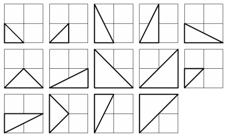

Problem
The points P(x1,y1) and Q(x2,y2) are plotted at integer co-ordinates and are joined to the origin, O(0,0), to form ΔOPQ.

There are exactly fourteen triangles containing a right angle that can be formed when each co-ordinate lies between 0 and 2 inclusive; that is, 0 ≤ x1, y1, x2, y2 ≤ 2.
Give that 0 ≤ x1, y1, x2, y2 ≤ 50, how many right triangles can be formed?